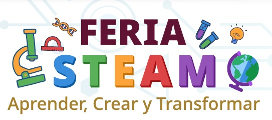
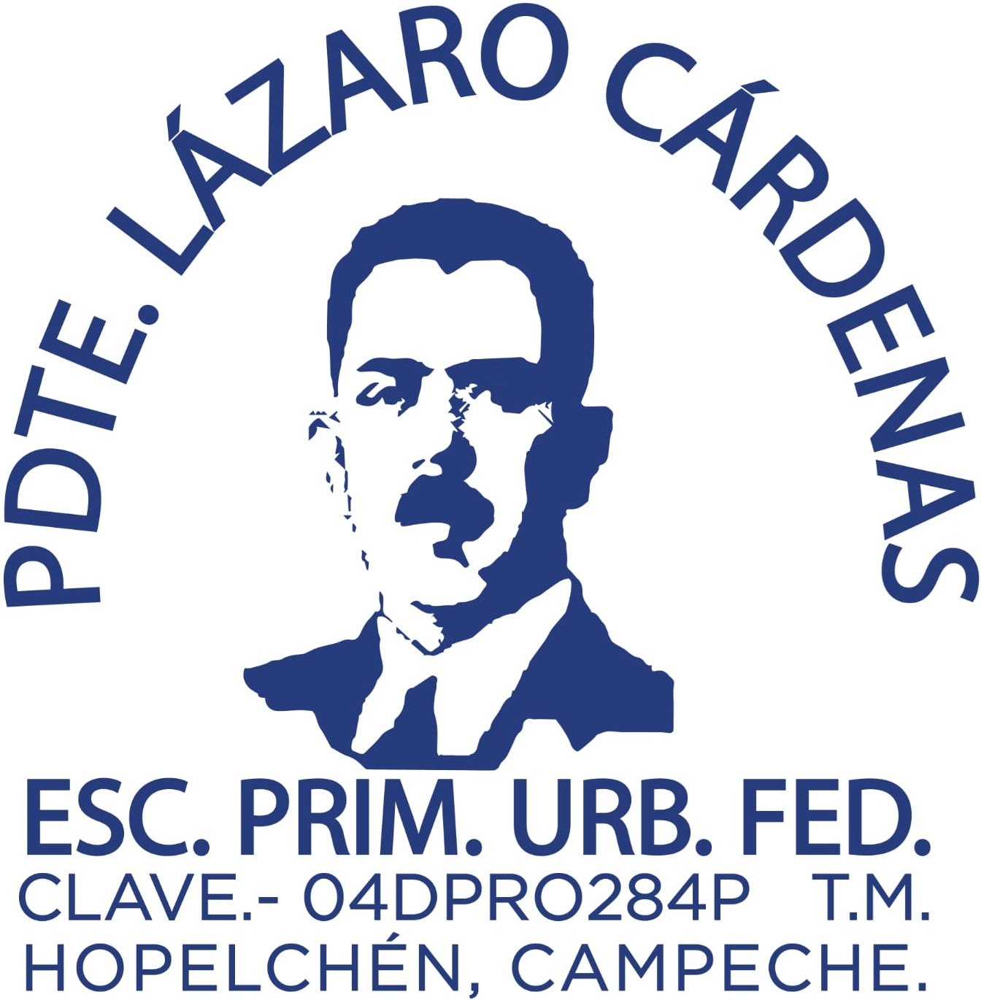
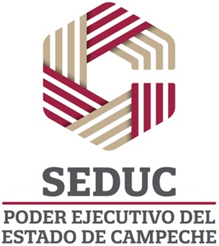

Pequeñas abejas, gran impacto
Una experiencia de investigación, creatividad y aprendizaje para reconocer la importancia de las abejas y promover acciones que contribuyan a su cuidado y conservación.



CIENCIA · TECNOLOGÍA · INGENIERÍA · ARTE · MATEMÁTICAS
Aprender para cuidar lo que nos da vida
Este espacio reúne momentos del proceso de aprendizaje: la exploración del entorno, el acercamiento al conocimiento de las abejas, el trabajo colaborativo, la elaboración de una maqueta y la presentación de una propuesta en la Feria STEAM.
REGISTRO DEL PROYECTO
Exploración y conocimiento de las abejas
Visitas, observación y acercamiento al mundo de las abejas nativas y su importancia para el entorno.
REGISTRO DEL PROYECTO
Aprendizaje y trabajo colaborativo
Actividades de investigación, diálogo y construcción colectiva de conocimientos.
REGISTRO DEL PROYECTO
Nuestra participación en la Feria STEAM
Presentación del proyecto, intercambio de experiencias y participación de nuestro equipo.
REGISTRO DEL PROYECTO
La maqueta y la propuesta de solución
Detalles del modelo, los espacios representados y la propuesta para contribuir al cuidado de las abejas.
Pequeñas acciones, grandes cambios
Conocer, valorar y proteger a las abejas es también aprender a cuidar la biodiversidad de nuestra comunidad. La educación puede convertirse en una semilla de transformación.